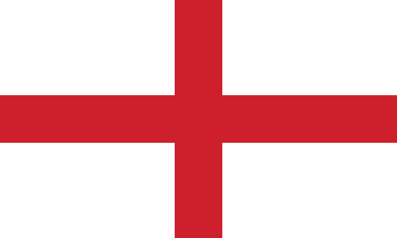

Belgie
Het Belgisch voetbalelftal is een team van mannelijke voetballers dat sinds 1904 België vertegenwoordigt in internationale wedstrijden. Het team wordt bestuurd door de Koninklijke Belgische Voetbalbond, de Belgische voetbalfederatie die een van de oprichters van de FIFA en de UEFA was.
Italie
Het Italiaans voetbalelftal is een team van voetballers dat Italië vertegenwoordigt in internationale wedstrijden. De bijnaam is La Squadra Azzurra of het daarvan afgeleide Azzurri. Italië werd viermaal wereldkampioen in. 1934, 1938, 1982, 2006 en eenmaal Europees kampioen in 1968

Rusland
Het Russisch voetbalelftal is een team van voetballers dat Rusland vertegenwoordigt in internationale wedstrijden. Van 1923 tot 1992 kwamen Russische voetballers uit voor het voetbalelftal van de Sovjet-Unie. Op het EK voetbal van 1992 was het land actief als deel van het Gemenebest van Onafhankelijke Staten.
Het Pools voetbalelftal is een team van voetballers dat Polen vertegenwoordigt in internationale wedstrijden. De bijnaam is Biało-czerwoni. Deze bijnaam komt van de kleuren van het thuistenue die op de nationale vlag terugvallen.
Het Oekraïens voetbalelftal is een team van voetballers dat Oekraïne vertegenwoordigt in internationale wedstrijden en competities.

Het Spaans voetbalelftal is een team van voetballers dat Spanje vertegenwoordigt in internationale wedstrijden. De nationale selectie heeft als bijnamen La Selección, La Furia Roja en La Roja. De Koninklijke Spaanse Voetbalfederatie werd in 1913 opgericht.

Het Engels voetbalelftal vertegenwoordigt Engeland, en niet het gehele Verenigd Koninkrijk in internationale voetbalcompetities, zoals het WK en het EK. Elk van de vier Home Nations heeft een eigen voetbalbond, een eigen competitie en een eigen nationaal elftal. Engeland is van de vier veruit de succesvolste.
Het Tsjechisch voetbalelftal is een team van voetballers dat Tsjechië vertegenwoordigt in internationale wedstrijden en toernooien. De eerste wedstrijd die de Tsjechen speelden na de afsplitsing van Tsjecho-Slowakije was tegen Turkije in 1994. De tabel gaat over de wedstrijden die sindsdien zijn gespeeld.

Het Frans voetbalelftal is een team van voetballers dat Frankrijk vertegenwoordigt in internationale wedstrijden en competities. De bijnaam is Les Bleus. Het team werd tweemaal wereldkampioen, tweemaal Europees kampioen, won tweemaal de Confederations Cup en won eenmaal goud op de Olympische Spelen.

Het Turks voetbalelftal is een team van mannelijke voetballers dat Turkije vertegenwoordigt in internationale wedstrijden. De gebruikelijke bijnaam van dit elftal is Ay-Yıldızlılar. De letterlijke betekenis ervan is de 'Maansterren', afgeleid van de witte maan en de ster op de Turkse vlag.
Het Fins voetbalelftal is een team van voetballers dat Finland vertegenwoordigt in internationale wedstrijden en competities, zoals de voorrondes voor het WK en het EK. Finland wist zich nog maar een keer voor een eindronde te plaatsen.

Het Zweeds voetbalelftal is een team van voetballers dat Zweden vertegenwoordigt in internationale wedstrijden en competities. Het behaalde goud op de Olympische Zomerspelen van 1948 in Londen.

Het Nederlands voetbalelftal is een team van mannelijke voetballers dat Nederland vertegenwoordigt in internationale wedstrijden. Het team wordt ook wel "Oranje" genoemd, naar de kleur van het shirt, waarmee weer wordt verwezen naar de Nederlandse koninklijke familie Oranje-Nassau.
Het Duits voetbalelftal is een team van voetballers dat Duitsland vertegenwoordigt in internationale wedstrijden. De officiële naam van het team is "die Mannschaft". De bijnamen van het team zijn die Nationalelf en Die Adler. Van de ploegen van de Deutscher Fußball-Bund is deze ploeg de A-Mannschaft.

Het Kroatisch voetbalelftal is een team van voetballers dat Kroatië vertegenwoordigt in internationale wedstrijden.

Het Oostenrijks voetbalelftal is een team van voetballers dat Oostenrijk vertegenwoordigt in internationale wedstrijden en competities.
Het Portugees voetbalelftal is een team van voetballers dat Portugal vertegenwoordigt in internationale wedstrijden. Het land haalde op het WK twee keer de halve finale, in 1966 en 2006. Op het EK waren er halvefinaleplaatsen in 1984, 2000 en 2012; in 2004 werd de finale verloren en in 2016 werd de titel gewonnen.
Het Zwitsers voetbalelftal is een team van voetballers dat Zwitserland vertegenwoordigt in internationale wedstrijden en competities. Zwitserland speelde op zondag 12 februari 1905 de allereerste officiële interland uit de geschiedenis van het land.
Het Deens voetbalelftal is een team van voetballers dat Denemarken vertegenwoordigt in internationale wedstrijden en competities. Denemarken had vroeger internationaal veel succes. Het land werd eenmaal Europees kampioen, won eenmaal de Confederations Cup en won eenmaal goud op de Olympische Spelen in Athene in 1906

Het Welsh voetbalelftal is een team van voetballers dat Wales vertegenwoordigt in internationale wedstrijden en competities. In 1958 bereikte het land de kwartfinale van het WK, waarin met 1–0 werd verloren van de latere wereldkampioen Brazilië.